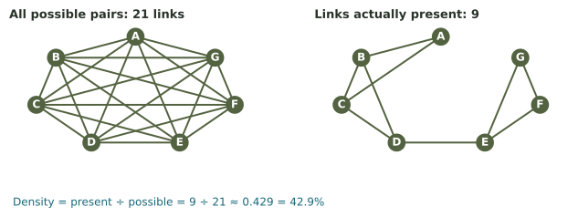
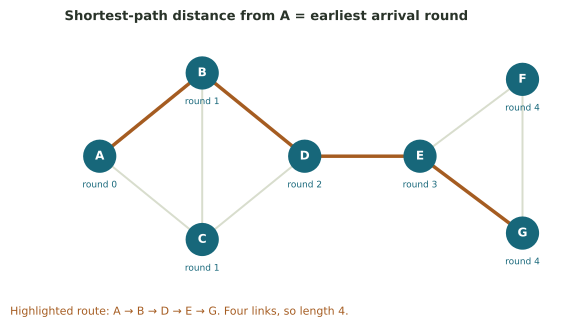
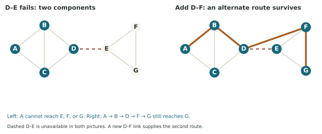
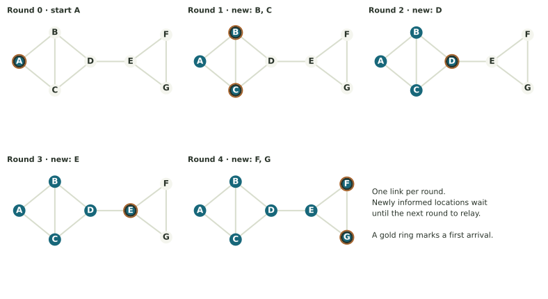
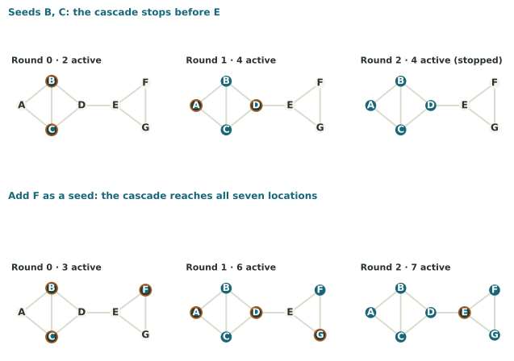
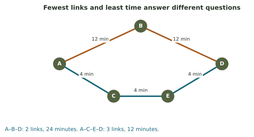

Small connections. Collective effects.
Follow a community alert through seven locations. Discover how direct contacts, alternate routes, and local decisions shape the whole system.
Connections change what a community can do
A county has seven places that can relay a public alert: a coordinator, library, clinic, school, shelter, residential block, and community center. The county knows which places can contact one another directly. Will an alert reach everyone? How long could it take? What happens if one communication link fails?
These questions concern relationships. Counting the seven locations gives part of the story. Recording how they connect gives the rest. A network is a mathematical model that keeps those connections visible.
You already have the tools to begin. From Weeks 1–4, we will use counting, fractions, percentages, and averages. From Weeks 5–6, we will use a rule repeatedly, keeping track of the current state. From Weeks 7–8, we will ask what we are trying to improve and which choices are allowed. No previous study of networks is assumed.
By the end, you can…
- Translate a real situation into nodes and links.
- Count direct neighbors and measure the network’s density.
- Trace routes and identify separated groups.
…and explain why it matters.
- Find a vulnerable link and test an alternate route.
- Trace a message or a threshold rule round by round.
- Distinguish a model’s calculation from a real decision.
Read the worked examples before opening the short checks. The explorer lets you test the same network. The illustrated PDF includes the explanations, a review, and solutions. Extra centrality formulas are marked as extensions.
A dot is a place. A line is a direct connection.
Each dot in a network drawing is a node. A node represents one object we choose to study. Each line is an edge, or link, joining two nodes. In our alert model, a node is a location, and an edge means that the two locations have an established two-way communication channel.
Mathematicians also call a network a graph and a node a vertex (plural: vertices). This use of “graph” differs from a graph of temperature against time. A network drawing shows relationships; its horizontal and vertical positions need not be measured quantities.

| Node | Location | Direct neighbors |
|---|---|---|
| A | Emergency coordinator | B, C |
| B | Library | A, C, D |
| C | Clinic | A, B, D |
| D | School | B, C, E |
| E | Shelter | D, F, G |
| F | North Block | E, G |
| G | Community Center | E, F |
How to read this mathematical world
- Only drawn links count. A and D may look close, but there is no direct A–D edge.
- The drawing is not a map to scale. A longer line does not mean a slower or longer trip. Moving a dot without changing its connections leaves this network unchanged.
- A crossing is not automatically a junction. You can transfer from one edge to another at a node. Lines that happen to cross without a marked node do not create another location.
We can record the same network with an edge list: AB, AC, BC, BD, CD, DE, EF, EG, FG. “AB” names the link between A and B; it does not mean multiplication. Because the links work both ways, AB and BA describe the same edge, counted once.
Assumptions we will keep using
The main network is undirected: every link works both ways. It is unweighted: all links count equally. It is also simple: there are no links from a node to itself and at most one link per pair. Those assumptions determine which formulas apply.
The seven locations and their links are an invented teaching example, not a description of an actual county emergency system.
A community center can call a shelter, but the shelter cannot call back using that channel. Would an ordinary two-way line accurately represent this relationship?
Compare your reasoning
No. Use a directed arrow from the community center to the shelter, or explain a different model. A two-way line would incorrectly permit travel in both directions.
Degree means the number of direct neighbors
The degree of a node counts the edges that touch it. In this simple network, that is also the number of its direct neighbors. “Degree” here is a count, not an angle or a temperature.
Example · Count the school’s contacts
The edges touching D are BD, CD, and DE. Its neighbors are B, C, and E, so the degree of D is 3. We write \(\deg(D)=3\). The notation means “the degree of node D.” A can eventually reach D, but A is not a direct neighbor and does not count toward D’s degree.
| Node | A | B | C | D | E | F | G |
|---|---|---|---|---|---|---|---|
| Degree | 2 | 3 | 3 | 3 | 3 | 2 | 2 |
Count the same links from two viewpoints
Add the degrees: \(2+3+3+3+3+2+2=18\). Yet the edge list has only 9 links. Why twice as many? Each link has two ends. AB contributes 1 to A’s count and 1 to B’s count.
This is the handshake rule. Imagine counting how many handshakes each person had: every handshake appears in two people’s totals. With 9 edges, the degree sum must be \(2(9)=18\). This gives us a useful check on our counting.
We can also use the average from Week 3: the mean degree is \(18/7\approx2.57\). No individual location needs to have degree 2.57. An average summarizes the group; every actual degree here is a whole number.
A different simple undirected network has 12 edges. What must the sum of all its degrees be? If you counted 23, what would that tell you?
Compare your reasoning
The sum must be 24. A total of 23 signals a counting or recording error under these assumptions. Every edge contributes exactly 2.
Density compares what exists with what could exist
Nine edges sounds like a lot until we ask how many are possible. Among seven locations, each one could have six other locations as neighbors. Counting \(7\times6=42\) lists every pair twice: once as AB and again as BA. Divide by 2 to get 21 distinct possible links.

The density of this simple undirected network is the fraction of possible links that are present:
As a percentage, that is about 42.9%. It means 42.9% of the possible pairs of locations have direct links. It does not mean that 42.9% of the locations are connected, or that any given message has a 42.9% chance of arriving. We have not introduced a probability of transmission.
Example · Read the general formula
Let \(n\) mean the number of nodes and \(m\) the number of edges. The letters are placeholders for counts. Then
\[\text{possible edges}=\frac{n(n-1)}{2},\qquad D=\frac{m}{n(n-1)/2}=\frac{2m}{n(n-1)}.\]
For seven nodes and nine edges, substitute \(n=7\) and \(m=9\). You get \(18/(7\cdot6)=18/42=0.428571\ldots\). The letter \(D\) in the formula stands for density; it is separate from the location named D.
A density of 1 means every pair has a direct link. A density of 0 means no links exist. Adding a new link to our example raises density to \(10/21\approx0.476\). Where that link goes still matters: a new link inside one region and a new link between regions increase the count equally but can have different effects on reliability.
Five nodes have four undirected edges. How many distinct pairs are possible, and what is the density?
Compare your reasoning
There are 5(4)/2 = 10 possible pairs. Density is 4/10 = 0.4, or 40%. Count possible pairs before taking the fraction.
A path counts the links you actually use
A path is a route that follows edges from one node to another without repeating nodes. In an unweighted network, its length is the number of edges used. The distance between two nodes is the length of a shortest path.
Example · Get an alert from A to G
One route is \(A\to B\to D\to E\to G\). Check each step against the edge list: AB, BD, DE, and EG all exist. The route names five nodes but uses four links, so its length is 4. The arrows here show the direction we travel along two-way links.
Another shortest route is \(A\to C\to D\to E\to G\), also length 4. There need not be just one shortest path. A route that names A–D–G is invalid: neither AD nor DG exists in the original network.

| Destination | A | B | C | D | E | F | G |
|---|---|---|---|---|---|---|---|
| Shortest distance from A | 0 | 1 | 1 | 2 | 3 | 4 | 4 |
Connected does not mean directly connected
The network is connected because every pair of nodes can be joined by some path. A and G do not need a direct link for the whole network to be connected.
A connected component is a whole group of nodes that can reach one another, with no path to nodes outside the group. Our original network has one component containing all seven nodes. If D–E is removed, there are two components: {A, B, C, D} and {E, F, G}. The braces simply mean “the group containing these nodes.”
An isolated node, with no incident edges, is a component of one. If no path exists between two locations, their distance is unreachable, not zero. Zero is the distance from a node to itself.
For edges PQ, QR, and ST, using nodes P, Q, R, S, T, how many components are there? What is the distance from P to R?
Compare your reasoning
There are two components: {P,Q,R} and {S,T}. The path P–Q–R has length 2. There is no path from P to S.
One vulnerable link can separate an entire region
A bridge is an edge whose removal increases the number of connected components. It need not look like a physical bridge. It is a link with a particular structural role.
D–E is a bridge: removing it changes our connected network from one component to two. By contrast, removing B–C does not disconnect the network. B can still reach C through A or D, so alternate routes remain.

Example · Spend the budget on an alternate route
Suppose the county can add one new link. Adding A–D shortens a local route but leaves D–E as the only cross-region link. Adding D–F creates a second way into the right region. If D–E fails, the route A–B–D–F–G still works.
This is redundancy: another route can serve when one link is lost. The new network is more resilient to that failure. In fact, with D–F added, no individual edge is a bridge; every edge has an alternate route around it.
A link failure and a location failure are different tests
Removing a node also removes every edge touching it. A node whose removal increases the number of components is an articulation point. D and E are articulation points in the original network.
Adding D–F protects against the loss of D–E, but both cross-region routes still depend on D. If the school itself goes offline, B and C lose both connections through D. The repaired network is still vulnerable to the loss of that node. A claim about resilience should name the failure being tested.
In the three-node path P–Q–R, which edges are bridges? Which node is an articulation point?
Compare your reasoning
Both PQ and QR are bridges: removing either isolates one end. Q is the articulation point: removing it leaves P and R separate. A bridge does not have to be the “middle” edge of a longer path.
“Important” can mean several different things
B, C, D, and E all have degree 3. Yet they do different jobs. B and C have alternate routes around them. D and E sit at the only passage between regions. Their equal degrees do not imply equal vulnerability or equal roles.
| Idea | What you measure | Question it helps answer |
|---|---|---|
| Degree | Number of direct neighbors | Who can contact many others in one step? |
| Closeness | Shortest-path distances to the other nodes | Who is relatively few steps from everyone? |
| Betweenness | How often shortest paths between other nodes pass through a node | Who lies along many short routes between groups? |
| Bridge or articulation role | Whether removing a link or node splits a component | Where can one failure separate the system? |
You do not need a betweenness formula this week. Trace routes between the two regions: every such path must pass through D and E. That gives a reason for their structural importance beyond counting neighbors. A bottleneck position is not a measurement of a person’s worth or the value of a neighborhood.
Extension · Turn “few steps away” into an average
From A, the distances to the six other nodes are 1, 1, 2, 3, 4, 4. Their sum is 15. The average distance is \(15/6=2.5\) edges. From D, the distances to A, B, C, E, F, G are 2, 1, 1, 1, 2, 2, whose sum is 9 and average is \(9/6=1.5\). So D is closer on average to the rest of this network.
One common closeness centrality score reverses that average: \((n-1)/(\text{sum of distances})\). Thus A scores \(6/15=0.400\), while D scores \(6/9\approx0.667\). Larger scores mean shorter average distances. The explorer displays a dash if a node cannot reach the whole network; this particular formula assumes all those distances exist.
Another optional score, degree centrality, divides degree by the largest possible degree, \(n-1\). For D this is \(3/6=0.5\): D is directly linked to half of the six other locations. It describes a fraction of possible neighbors, not a probability of success.
If the objective is to reach the school directly from A, should you add A–D or D–F? If the objective is surviving loss of D–E, does the answer change?
Compare your reasoning
Add A–D for direct A-to-school contact. Add D–F for an alternate cross-region route. “Best” depends on the objective, just as in Weeks 7–8.
An adjacency table answers “Is there a direct link?”
Adjacent means directly connected by an edge. An adjacency matrix is simply a square table with one row and one column for each node. A 1 records a direct connection. A 0 records its absence.
Choose the row for the starting node and the column for the other node. At row B, column D, you find 1 because BD is an edge. At row A, column D, you find 0, even though A can reach D using two links. The table records direct adjacency, not every possible path.
| From / to | A | B | C | D | E | F | G |
|---|---|---|---|---|---|---|---|
| A | 0 | 1 | 1 | 0 | 0 | 0 | 0 |
| B | 1 | 0 | 1 | 1 | 0 | 0 | 0 |
| C | 1 | 1 | 0 | 1 | 0 | 0 | 0 |
| D | 0 | 1 | 1 | 0 | 1 | 0 | 0 |
| E | 0 | 0 | 0 | 1 | 0 | 1 | 1 |
| F | 0 | 0 | 0 | 0 | 1 | 0 | 1 |
| G | 0 | 0 | 0 | 0 | 1 | 1 | 0 |
Look at three features. The diagonal from top left to bottom right is all zeros because no node links to itself. The entries mirror one another across that diagonal because the links work both ways. The sum of a row is its node’s degree: D’s row has three 1s.
Why learn a second representation?
A drawing helps us see clusters and routes. A table lets us check entries systematically and store a network in a computer. They describe the same connections. You can read the matrix as an ordinary table; matrix algebra is not required.
Does the 0 at row A, column G mean an alert can never get from A to G?
Compare your reasoning
No. It says there is no direct A–G link. The four-edge route A–B–D–E–G still exists. Adjacency and reachability answer different questions.
A network shows the routes. A rule determines the spread.
Diffusion means something spreading through connections. To calculate it, we need more than a picture. We need an initial state and a rule for updating that state, just as we needed a starting balance and an interest rule in Week 6.
The alert rule, stated precisely
- At round 0, only A has the alert. Round 0 is the starting state, before any sending.
- During each round, every location that was informed at the start of that round sends to all its direct neighbors.
- New recipients may begin sending in the following round. All updates use the same previous snapshot.
- Once informed, a location stays informed. Every available transmission succeeds.
One round is one model time step. We have not said it equals a minute. That would require information about real transmission times.

| Round | Newly informed | All informed | Total |
|---|---|---|---|
| 0 | A (the initial source) | A | 1 |
| 1 | B, C | A, B, C | 3 |
| 2 | D | A, B, C, D | 4 |
| 3 | E | A, B, C, D, E | 5 |
| 4 | F, G | A, B, C, D, E, F, G | 7 |
Round 1 has 2 newly informed nodes and 3 informed nodes in total. Those are different counts. If B and C both send to D, D is still only one new recipient. We count locations, not message copies.
Under this exact rule, a node first receives the alert at the round equal to its shortest-path distance from A. A four-link path needs at least four rounds, and sending along a shortest path achieves that time. With D–E removed, no number of rounds can deliver A’s alert to F or G because no path remains.
Real alerts can be delayed, ignored, misunderstood, or blocked by an outage. The model’s timing is conditional on the rule. A deterministic spread calculation does not establish a real-world arrival guarantee.
At round 2, how many nodes are newly informed and how many are informed in total? If B and C both contact D, why do we not count two new nodes?
Compare your reasoning
D is the one new node; four nodes are informed in total. Two messages to the same location do not create two distinct informed locations.
Sometimes one informed neighbor is not enough
An emergency relay might pass on an alert immediately. A person deciding whether to adopt a new practice may wait for support from several neighbors. A threshold model gives a simple way to describe that different situation. “Active” now means a location or person has adopted the behavior; it does not merely mean a message arrived.
Use this rule: an inactive node becomes active in the next round if at least half its neighbors are active now. Active nodes stay active. Starting active nodes are called seeds. We again update all nodes from the same previous snapshot.
| Number of neighbors | 1 | 2 | 3 | 4 | 5 | 6 |
|---|---|---|---|---|---|---|
| Minimum active neighbors needed | 1 | 1 | 2 | 2 | 3 | 3 |
For 3 neighbors, half is 1.5. Since we cannot have 1.5 active neighbors, at least 2 must be active. The fraction \(2/3\) passes one-half, while \(1/3\) does not. For an isolated node, this model leaves it inactive unless it is a seed; there is no neighbor influence to observe.
Example · Why the cascade stops
Start with B and C active. In the next round, A activates because both its neighbors are active; D activates because 2 of its 3 neighbors are active. The active set is now A, B, C, D.
E has neighbors D, F, G. Only D is active, giving \(1/3<1/2\), so E waits. F and G have no active neighbors. No one new activates in the following round. The process stops with four active nodes, although the network is connected.

Example · One extra seed changes the outcome
Start instead with B, C, and F active. In round 1, A and D activate as before. G also activates: its neighbors are E and F, so the one active neighbor F reaches the half-neighbor threshold. E still waits in round 1 because only F was active among its neighbors at round 0.
At the start of round 2, E has three active neighbors: D, F, G. E activates, so all seven nodes are now active. The network and the rule stayed the same; adding F to the starting set changed the collective outcome.
A cascade is a sequence in which one activation helps trigger later activations. This is one meaning of a collective effect: the result belongs to interactions across the group. A cascade can stop, spread partly, or reach everyone. It is not automatically good or bad; the meaning depends on what is spreading.
The half-neighbor rule is an invented model, not a measured law of human behavior. People may use different thresholds, and adoption can reverse. Its value here is that we can state it precisely and see what follows.
A node has five neighbors and a 60% threshold. How many active neighbors does it need? Does that tell you whether the entire network will activate?
Compare your reasoning
It needs 3 because 60% of 5 is 3. That is only a local requirement. The network structure, the other thresholds, and the starting seeds determine whether a larger cascade occurs.
Arrows and weights add information
A directed edge is drawn with an arrow. If \(A\to B\) means “A can send to B,” it does not also mean that B can send to A. For \(A\to B\to C\), A can reach C but C cannot return to A using those arrows. A path must obey every direction.
Out-degree counts outgoing arrows; in-degree counts incoming arrows. In that chain, B has one incoming and one outgoing arrow. These describe different roles. We must define what an arrow means before interpreting its direction.
A weight is a number attached to an edge. It might represent minutes, dollars, capacity, or a multiplier. Its meaning determines how we use it.

In the AI application, a weight means a multiplier applied to a numerical signal. A negative weight can subtract from the next node’s sum. That is different from a negative travel time, which would not fit the road example. A weight has meaning only in its mathematical setting.
Structure, updates, and choices belong together
The network is the structure: who can interact with whom. The current informed or active set is the state. The spread or threshold rule creates dynamics: how that state changes over successive rounds. These words describe things you have already calculated.
Week 5’s feedback systems combined observations with responses. A network adds the routes through which those observations and responses can travel. More sharing can produce more recipients, who then share further: an amplifying feedback process. A failed communication link can prevent a corrective message from arriving at all.
Example · A constrained design decision
Weeks 7–8 asked us to choose an objective and describe allowed choices. Here the constraint is “add one new link.” If the objective is direct contact from A to D, A–D succeeds. If the objective is continued access across regions after D–E fails, D–F succeeds. Each adds one link and gives density 10/21, but the consequences differ.
We could test all allowed links for a chosen criterion. That would optimize the stated model; it would not decide what a community ought to value. Costs, staffing, accessibility, trust, privacy, and unequal outage risks may change the real decision.
A practical routine for a new network
- State what each node and edge represents, including direction and weights.
- Write an edge list or a neighbor table so the drawing can be checked.
- Choose a question: direct contacts, travel, vulnerability, or spread.
- Calculate with the appropriate rule and show a route, count, or sequence of states.
- Test a proposed change against the original objective.
- Explain one feature the model leaves out and what further information would help.
For Week 10, keep this habit: a precise local rule can generate a result that is hard to guess from a quick glance. Networks gave us cascades across locations. Next week, repeated number and shape rules will give us other surprising patterns.
Continue the investigation
Use the explorer to remove D–E, add D–F, and compare automatic spread with the half-neighbor rule. Then complete the guided lab, make an alert-network recommendation, and follow weighted signals through the AI example.
Background and optional further reading: NIST’s graph vocabulary and bridge definition; Google’s nodes and hidden layers. All numerical networks and scenarios in this unit are constructed teaching examples.